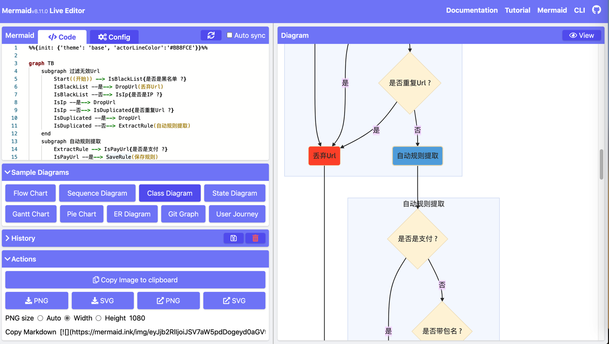

mermaid.js
mermaid=mermaid.js- 是什么：一个js库，用于画图，主要是画各种流程图等等
- Github
- mermaid-js/mermaid: Generation of diagram and flowchart from text in a similar manner as markdown
- 资料
- 文档
- mermaid - Markdownish syntax for generating flowcharts, sequence diagrams, class diagrams, gantt charts and git graphs
- 举例
- Examples - mermaid - Markdownish syntax for generating flowcharts, sequence diagrams, class diagrams, gantt charts and git graphs.
- 支持不同类型的图
- flowchart
- Sequence diagrams
- Class diagrams
- State diagrams
- Entity Relationship Diagrams
- User Journey Diagram
- Gantt diagrams
- Pie chart diagrams
- Requirement Diagram
- Other Examples
- 文档
在线编辑（预览、导出）
- Mermaid live editor
- https://mermaid-js.github.io/mermaid-live-editor/edit
- 特点
- 支持设置参数，但包括自定义主题theme
- 如何导出图片
- png
- Action -> 点击第一个按钮 下载PNG -> 下载保存了png图片
- 如果想要高清晰度的，则要 先点击 PNG size，选择 Width，默认：1080，再点击 下载PNG，即可。
- Action -> 点击第一个按钮 下载PNG -> 下载保存了png图片
- jpg
- Action -> 点击 外链PNG -> 打开新页面，保存图片，可以保存出jpg格式的
- png
- https://mermaid-js.github.io/mermaid-live-editor/edit

效果举例
%%{init: {'theme': 'base', 'actorLineColor':'#BB8FCE'}}%%
graph TB
subgraph 过滤无效Url
Start((开始)) --> IsBlackList{是否是黑名单 ?}
IsBlackList --是--> DropUrl(丢弃Url)
IsBlackList --否--> IsIp{是否是IP ?}
IsIp --是--> DropUrl
IsIp --否--> IsDuplicated{是否重复Url ?}
IsDuplicated --是--> DropUrl
IsDuplicated --否--> ExtractRule(自动规则提取)
end
subgraph 自动规则提取
ExtractRule --> IsPayUrl{是否是支付 ?}
IsPayUrl --是--> SaveRule(保存规则)
IsPayUrl --否--> IsPackage{是否带包名 ?}
IsPackage --是--> SaveRule
IsPackage --否--> RulePostProcess(规则后处理)
SaveRule --> RulePostProcess
subgraph 规则后处理
RulePostProcess --> FilterInvalidValue(过滤Default和0等无效的值)
FilterInvalidValue --> AddEventCode(添加EventCode参数)
AddEventCode --> AssistManualCheck(辅助人工判断)
end
end
subgraph 辅助人工判断
AssistManualCheck --> KeepHttpsOnlyHost(Https只保留Host域名)
KeepHttpsOnlyHost --> CalcFld(计算根域名fld)
CalcFld --> FindCompany(查找公司名)
FindCompany --> GenZhcnFisrtLetter(计算中文拼音首字母)
GenZhcnFisrtLetter --> GenFinalRule(生成最终规则)
end
subgraph 生成最终规则
GenFinalRule --> CalcThemePlay(计算游戏主题和游戏玩法)
CalcThemePlay --> CalcUrlRuleType(计算规则类型)
CalcUrlRuleType --> GenUrlSource(生成url来源)
GenUrlSource --> OutputFileCsvExcel(输出csv和excel文件)
OutputFileCsvExcel --> End
DropUrl --> End((结束))
end
style Start fill:#58D68D,stroke-width:2px
style DropUrl fill:#FF5733,stroke-width:1px
style End fill:#85929E,stroke-width:2px
style ExtractRule fill:#5DADE2,stroke-width:2px
style RulePostProcess fill:#5DADE2,stroke-width:2px
style AssistManualCheck fill:#5DADE2,stroke-width:2px
style GenFinalRule fill:#5DADE2,stroke-width:2px
效果：
- 在线预览

- 
- 导出图片